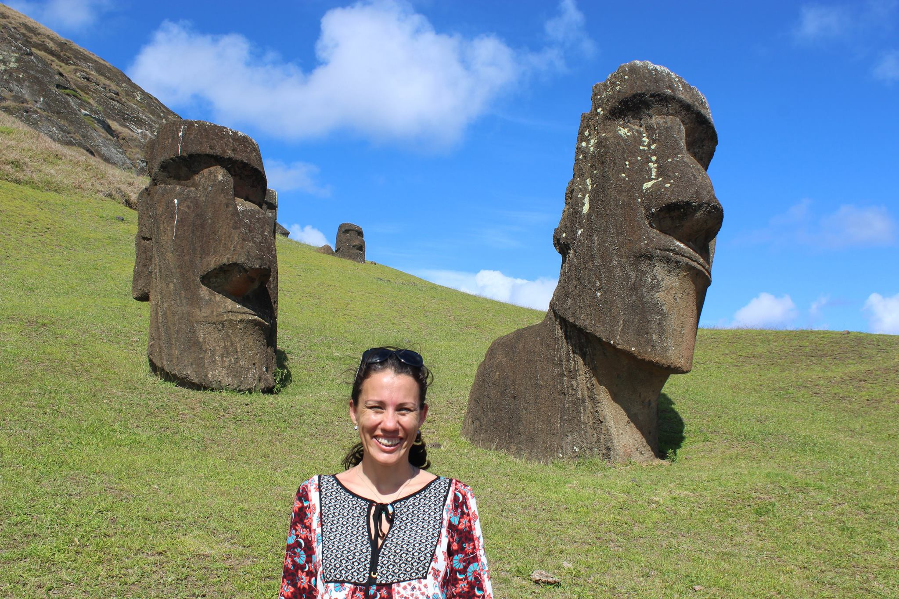

A designer since 2002, experienced in websites and media development, in special with Flash. All of her career was in Curitiba – Pr being very recognized at that time, before focus her time on Engineer. Even though, she always find out time to dedicate to exercise her creativity in her Engineering roles. That’s make her an unique Engineer Designer or it could be Designer Engineer?
A developer focused on graphic interface. Now, she is developing skills to program on Switch and develop apps (soon). In August she will start a new career on Computer Sciences to complement both Engineering and Design skills. Who can stop this woman?
As a Cartographer Engineer with experience in precision Agriculture, testing, validating and integrating GNSS receiver with agriculture machinery. That includes support customers support and dealers. It includes work negotiate test farms and build new structure. Previous experience on Oil and Gas Industry, performing bathymetric surveys using single beam equipment for nautical signaling, and offshore positioning of rigs, ships and anchor systems as well finalization
Open to travel up to 75% of the time